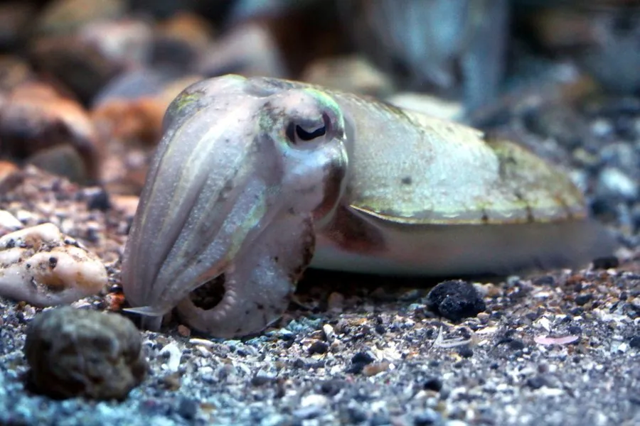

软体动物 · 动物界
金乌贼 Sepia esculenta

中国近海常见的乌贼，体内有石灰质内壳，体表能随环境变色，遇敌时喷墨逃生，是重要的经济头足类。
- 分类
- 门软体动物门纲头足纲目乌贼目科乌贼科属乌贼属
- 栖息环境
- 近岸沙泥底质与岩礁海域，春季游向浅海产卵
- 地理分布
- 中国黄海、渤海和东海，以及日本、朝鲜半岛沿海
- 保护级别
- 暂无评估；中国未列入国家重点保护野生动物名录（重要渔业资源）
物种志
金乌贼的身体呈卵圆形、背腹稍扁，躯干两侧环绕着狭窄的鳍，体内有一块石灰质内壳，俗称“乌贼骨”或“海螵蛸”，可以通过调节内壳气室中的气体和液体来控制浮力。它有 8 条腕和 2 条可迅速弹出的捕食触腕，腕上密布吸盘；口部有坚硬的角质颚和齿舌。体表呈黄褐色，背部带有细密的斑点和花纹，皮肤中的色素细胞发达，能在瞬间改变体色。胴长一般 15–20 cm，最大约 30 cm。
金乌贼栖息于近岸的沙泥底质和岩礁海域，是典型的底栖性头足类。它在中国沿海分布广泛，黄海、渤海和东海是主要产区，日本和朝鲜半岛沿海也有分布。金乌贼是肉食性动物，捕食虾、蟹、小鱼和底栖甲壳类，捕猎时把两条长触腕猛然弹出，用吸盘抓住猎物。春季它会游向浅海产卵，把卵粒黏附在礁石、海藻和渔具上，卵常聚成串状；产卵后多数亲鱼死亡。遇到天敌时，它会喷出墨汁掩护逃跑。金乌贼是中国重要的渔业资源，由于长期捕捞和近岸环境变化，野生资源下降，各地已开展增殖放流和资源养护；目前它没有IUCN 的正式评估，中国也未将其列入国家重点保护野生动物名录。
形态与习性
- 食性捕食虾、蟹、小鱼和底栖甲壳类
- 体长胴长一般 15–20 cm，最大约 30 cm
- 体重常见 0.3–1 kg，最大可超过 2 kg
- 寿命约 1 年，繁殖后死亡
- 繁殖春季洄游到浅海，把卵黏附在礁石、海藻上
- 内壳体内有石灰质内壳，俗称“海螵蛸”，可入药
趣味知识
- 乌贼骨即中药“海螵蛸”，是乌贼体内的石灰质内壳，可用于止血和制酸。
- 金乌贼能在一瞬间改变体色和花纹，用于伪装、求偶和恐吓天敌。
- 它遇敌时喷出的墨汁能掩护逃跑，还能暂时干扰捕食者的嗅觉。